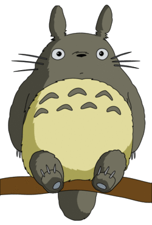
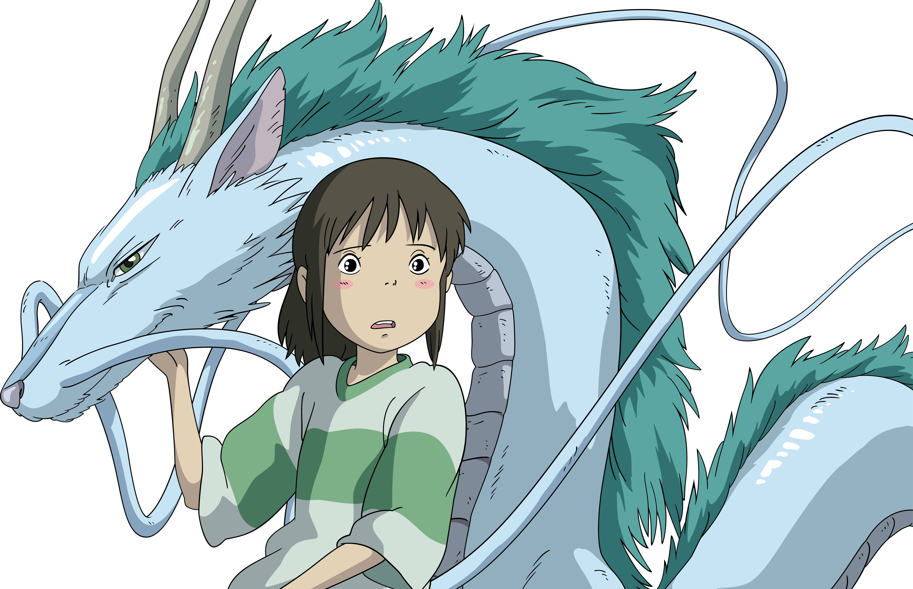
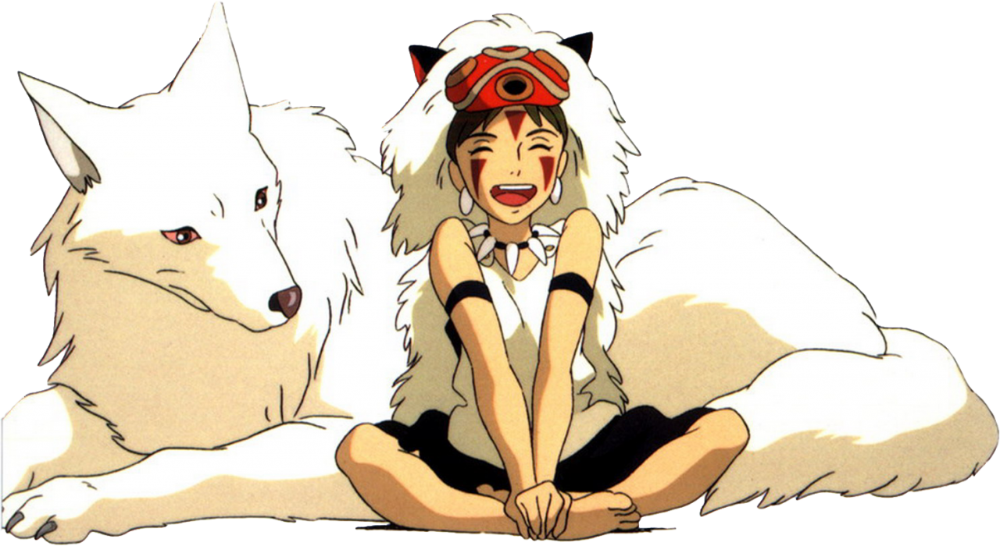

Лучшие персонажи студии Ghibli
Навигация |
|||
| Начальная страница | |||
| Режиссеры и их фильмы | |||
| Топ 10 фильмов | |||
| Топ 5 персонажей | |||
| О студии | |||
| Анкета | |||
|
|
Топ 5 персонажей из фильмов студии Ghibli
Студия Ghibli известна своими запоминающимися персонажами и завораживающими историями. Здесь представлены 5 наиболее популярных и ярких персонажей студии.
| Топ 5 персонажей: |

Могущественный волшебник, известный своим эксцентричным поведением и тщеславием, живет в волшебном ходячем замке. Развитие персонажа, от эгоцентричного волшебника до самоотверженного героя, занимает центральное место в повествовании фильма «Ходячий замок».


Тоторо из фильма «Мой сосед Тоторо» — большой дружелюбный лесной дух, который подружился с двумя девочками, когда они справляются с проблемами, связанными с болезнью их матери и переездом в новый дом. С его пушистым внешним видом, Тоторо воплощает в себе волшебство и невинность детства.

Главная героиня «Унесенных призраками» — десятилетняя девочка, которая случайно попадает в мир духов и божеств. Первоначально напуганная и беспомощная, Тихиро постепенно набирается смелости, показывая истинную силу духа.

Божество, не имеющее своего лица и бродящее в поисках нового. Безликий обладает способностью поглощать черты и эмоции других.

(Принцесса Мононоке)
Воспитанная богиней-волчицей, она борется за защиту леса и его обитателей от посягательств человека. Сан воплощает центральные темы фильма «Принцесса Мононоке» — защиту окружающей среды и тонкий баланс между природой и цивилизацией.
| <назад | вперед> |